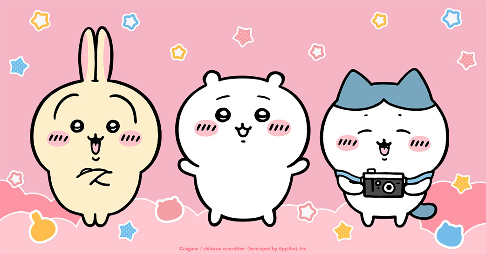

✦ About Chiikawa
농담곰으로 유명한 일본의 일러스트레이터 나가노 작가가 트위터에서 연재 중인 만화 <뭔가 작고 귀여운 녀석>에 나오는 캐릭터. 작고 하얀 외모를 가진 햄스터 캐릭터로, 겁이 많지만 성실하게 살아가려는 모습을 보이며 친구인 하치와레, 우사기와 함께 일하고 모험하는 소소한 일상을 보낸다.

우사기, 치이카와, 하치와레
✦ Activities in Korea
- 2026.02.27 한국 공식 치이카와샵 용산 1호점 오픈
- 2026.03.27 LG 트윈스 콜라보
✦ Chiikawa’s Friend
치이카와의 친구인 하치와레와 우사기는 각기 다른 성격을 지니며 함께 소소한 일상과 모험을 나누고 있다.